이동 종류
이 페이지는 Wallet SDK 안에서 자금이 움직일 수 있는 경로를 전부 늘어놓습니다. 경로는 일곱 개뿐이고 그 밖의 조합은 허용하지 않습니다. 아래 표가 그 일곱을 접두사·요청 주체·정책과 함께 열거합니다.
| 이동 | 접두사 | 어디서 어디로 | 요청 주체 | 정책 |
|---|---|---|---|---|
| 계정 지갑 입금 | awd- |
VASP·개인 → 계정 지갑 | 온체인 관측 | 없음 |
| 워크스페이스 지갑 입금 | wwd- |
회사 외부 지갑 → 워크스페이스 지갑 | 온체인 관측 | 해제 요청이 승인 게이팅 |
| 집금 | swp- |
계정 지갑 → 워크스페이스 vault | 시스템 | 서명 인가 |
| Vault 이체 | wvt- |
워크스페이스 vault 간 | 시스템·운영자 | 서명 인가 |
| 계정 귀속 출금 | wwac- |
워크스페이스 vault → VASP·개인 지갑 | 사용자·시스템 | 서명 인가 |
| 자기 귀속 출금 | wwsf- |
워크스페이스 vault → 회사 외부 지갑 | 운영자 | 서명 인가 |
| 계정 지갑 출금 | aww- |
계정 지갑 → 외부 | 운영자(오입금 반환) | 서명 인가 + 승인 게이팅 |
표의 승인 게이팅은 어드민 액션이 승인자의 확인을 거쳐야 실행되는 통제입니다(자세히).
이동은 여섯 대상 사이에서만 일어납니다
자금이 오가는 대상은 여섯입니다. 내부 둘과 외부 넷으로 나뉩니다.
| 대상 | 실체 | 자금 귀속 | 식별 근거 |
|---|---|---|---|
| 계정 지갑 | 최종 사용자 수취 주소 | 최종 사용자 | — |
| 워크스페이스 vault | 계정용이 아닌 모든 vault | 워크스페이스 | vault 태그 |
| VASP | 상대 거래소 수탁 지갑 | 상대 VASP의 고객 | vaspId + 수탁 지갑 확인 |
| 개인 지갑 | 최종 사용자 본인 지갑 | 최종 사용자 | 계정 주소록 — nonce 서명 소유 증명 |
| 회사 외부 지갑 | 발행 시스템 · 콜드월렛 | 워크스페이스 | 워크스페이스 주소록 |
| 미등록 | 어느 주소록에도 없는 주소 | 알 수 없음 | 없음 |
미등록은 종류가 아니라 판정 실패 상태입니다. 그런 주소에서도 자금이 들어올 수 있고, 그때도 동결로 받습니다. 동결은 입금을 확정 시 fail-closed로 잡아 두는 상태입니다(자세히).
막을 수 있는 방향과 막을 수 없는 방향이 판정을 가릅니다
방향이 판정을 가릅니다. 아래 그림이 그 방향을 요약합니다.

입금은 막을 수 없어 동결로 받습니다. 온체인 전송에는 Wallet SDK의 허가가 필요하지 않기 때문입니다.
출금은 반대입니다. Wallet SDK가 서명하므로 실제로 막을 수 있습니다. 그래서 구조적으로 지원하지 않는 조합이 매트릭스에서 다섯 칸이고, 규칙으로 묶으면 셋입니다.
- 계정 지갑에서 바로 나가지 않습니다: 다른 계정 지갑·VASP·개인 지갑이 모두 막혀 있고, 집금이 선행합니다.
- 워크스페이스 vault에서 계정 지갑으로 되돌아가지 않습니다: 집금을 되돌리는 반대 방향 이동이 없습니다.
- 근거 없는 주소로는 나가지 않습니다: 워크스페이스 vault에서 미등록 주소로 가는 칸이 그것입니다.
출금이 셋으로 갈린 이유는 자금 귀속입니다
자금 귀속은 그 자금이 Account 것인지 Workspace 것인지입니다. 계정 귀속 출금(wwac-)이 옮기는
자금은 최종 사용자의 것이고, 자기 귀속 출금(wwsf-)이 옮기는 자금은 회사 자기 자금입니다.
이 구분이 스코프 축을 정합니다. 스코프 축은 어떤 데이터가 어느 스코프 키로 격리되는지의 분류입니다. 앞의 것은 tenant 축이고 뒤의 것은 workspace 축이라, 격리 키가 달라져 이동 종류를 나눕니다.
계정 지갑 출금(aww-)은 또 다른 경우입니다. 계정 지갑에서 직접 나가는 유일한 경로이고, 알려진
용도는 오입금 반환입니다.
집금을 시작하는 주체는 운영자가 아니라 시스템입니다
집금(sweep)은 계정 지갑 자산을 워크스페이스 vault로 모으는 이동입니다(자세히). 시작하는 주체는 시스템이고, 파트너사 서버 요청과 온체인 관측과 자동화가 모두 여기 들어갑니다.
운영자가 계정 지갑 자금을 건드리는 경로는 집금이 아닙니다. 계정 지갑 출금(aww-)입니다.
목적지마다 확인 근거가 갈립니다
개인 지갑은 최종 사용자의 소유 증명이 필요합니다. 소유 증명은 개인 지갑을 주소록에 올리기 전에 최종 사용자가 그 키로 서명해 보이는 절차입니다.
VASP 지갑은 트래블룰이 그 역할을 대신합니다. 트래블룰은 가상자산 이전 시 송·수신 정보를 사업자끼리 교환하는 규제 의무입니다(자세히).
미등재가 곧 거부는 아닙니다. 등재 여부는 정책 입력이고 정책이 그것을 보고 판단합니다.
다음으로
주소록은 주소에 등재 근거를 붙이는 장부입니다. 등재 근거와 회수, 재등재가 식별자에 무엇을 하는지는 주소록에 있습니다.